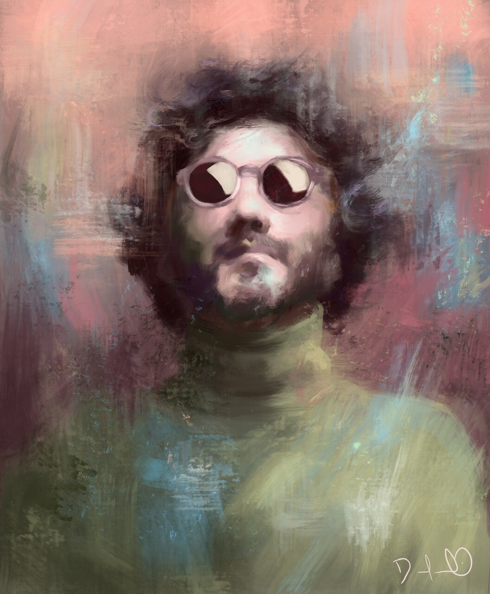
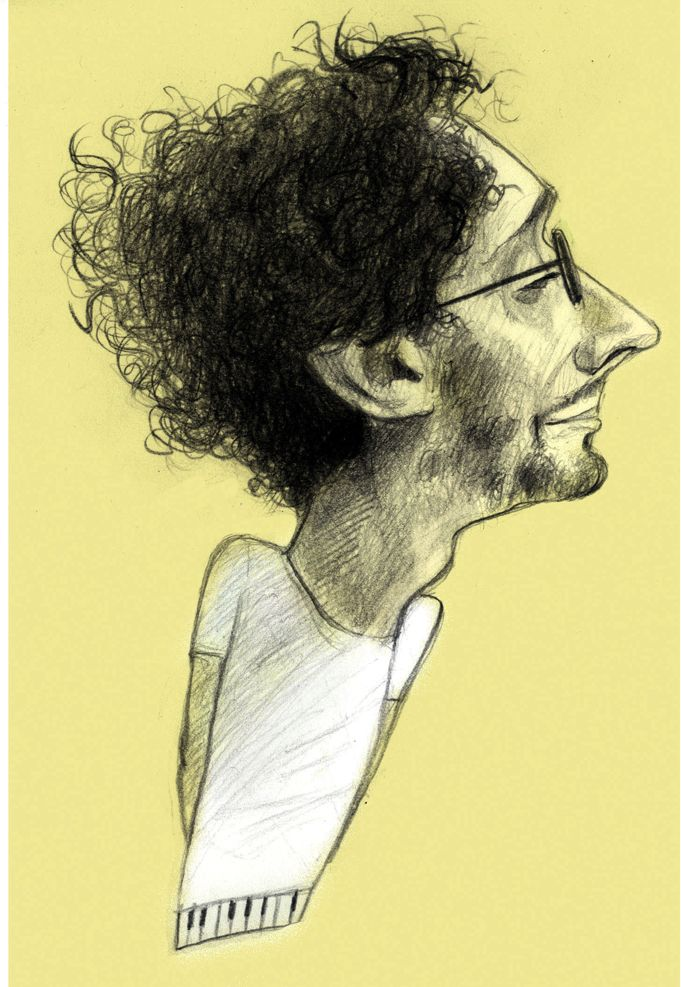

Imágenes que mejor representan a Fito
Arte
Jose Pelletier de Rep. Dominicana

Psicodelica, Diego Pinos

Fito Paez by Francisco Javier Olea
Imágenes que mejor representan a Fito
Jose Pelletier de Rep. Dominicana
Psicodelica, Diego Pinos
Fito Paez by Francisco Javier Olea